MT1 practice set
MT1 is on Monday 23 November at 18:00: three questions on Chapter I, Chapter II and single-phase transformers (first half of Chapter III). Each part below matches one exam question. For a mock exam, take one question from each part. Every solution is folded under its question.
Part A · AC power systems (Chapter 1)
Part B · Magnetic circuits (Chapter 2)
Part C · Single-phase transformers (Chapter 3, first half)
Part A · AC power systems
Chapter I. Complex power, power factor correction, three-phase Y and Δ circuits. Try each question first, then open its solution.
A1 · MT1 Fall 2024, Q1 30 pts
(a) A load has v(t) = 230√2 cos(100πt + 45°) V and i(t) = 5√2 cos(100πt + 30°) A. Calculate the average power of the load.
(b) A load has V = 588∠35° V and I = 5∠5° A. Calculate the active power P, the reactive power Q and the power factor of the load (leading or lagging).
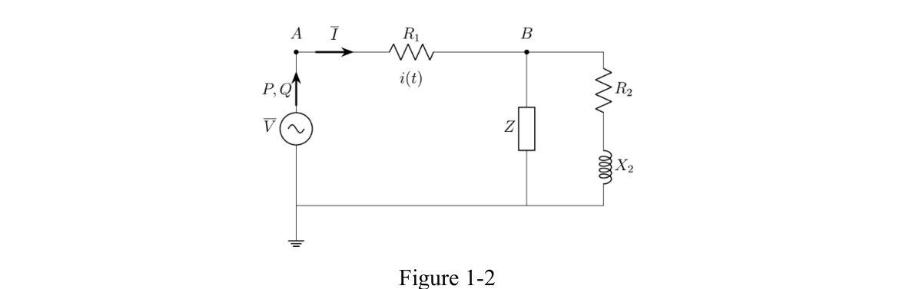
Figure 1-2: the source V (delivering P, Q at point A) feeds R1 to point B, where Z is in parallel with R2 + jX2.
(c) In Figure 1-2, V = 220∠25° V, I = 5∠35° A and R1 = 1 Ω. Determine the power factors at points A and B (leading or lagging).
(d) In Figure 1-2, |V| = 200 V, P = 2 kW, Q = 1.5 kVAR, R1 = 2 Ω, R2 = 20 Ω and X2 = 4 Ω. Determine Z.
(e) A single-phase rooftop photovoltaic system on a farmhouse feeds, through a 200 m single-phase cable, a water pump and a capacitor bank at point A (Figure 1-3).
Water pump: 3 kW at 0.8 power factor, lagging. The voltage across the pump terminals must be 230 V.
Capacitor bank: designed to improve the power factor at point A to 0.95 lagging.
Cable: (1.12 + j0.13) Ω/km for each conductor.
Determine the voltage and the active and reactive power settings of the photovoltaic system at the house.
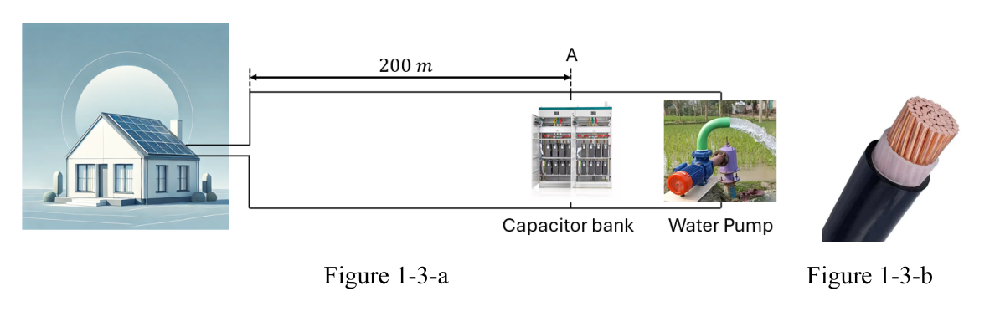
Figure 1-3: house (PV) → 200 m two-conductor cable → point A (capacitor bank) → water pump.
Solution
(a) Use RMS values and the angle between v and i.
(b) Complex power uses the conjugate of the current.
P = 2546.11 W, Q = 1470 VAR, pf = cos 30° = 0.866 lagging (Q > 0, current lags voltage).
(c) Point A:
pfA = cos 10° = 0.985 leading (Q < 0).
Point B: R1 absorbs only active power, I²R1 = 5² · 1 = 25 W. Reactive power is unchanged.
(d) Take V = 200∠0° V as reference.
Zpar is Z in parallel with R2 + jX2, so
Check: with this Z the source delivers 2000 + j1500 VA.
(e) The cable has two conductors of 0.2 km each:
Pump: P = 3000 W, Q = 3000 tan(cos⁻¹ 0.8) = 2250 VAR. At point A (pf 0.95 lagging):
Cable current, with VA = 230∠0° V:
Voltage at the house:
Cable losses: I²R = 13.73² · 0.448 = 84.45 W and I²X = 13.73² · 0.052 = 9.80 VAR.
PV settings: |V| = 236.07 V, P = 3.084 kW, Q = 0.996 kVAR (supplied, lagging).
A2 · MT1 Fall 2024, Q2 35 pts
(a) The input power to a 3-phase balanced inductive load is 5 kW. The rms line-to-line voltage and rms line current at the load terminals are 400 V and 8.66 A. The supply frequency is 50 Hz.
Find the power factor of the load.
A 3-phase capacitor bank is connected in parallel with the load to achieve unity power factor, and the load line-to-line voltage stays at 400 V. Find the total reactive power injected by the bank.
The bank is Δ-connected. Find the capacitance in each phase.
(b) A balanced Y-connected source drives a balanced Y-connected load through three lines (Figure 2-1). Phase sequence abc (van leads vbn by 120°), 50 Hz. Van = 230∠0° V, each line ZL = 0.1 + j0.5 Ω, each load phase ZY = 5 + j3 Ω.
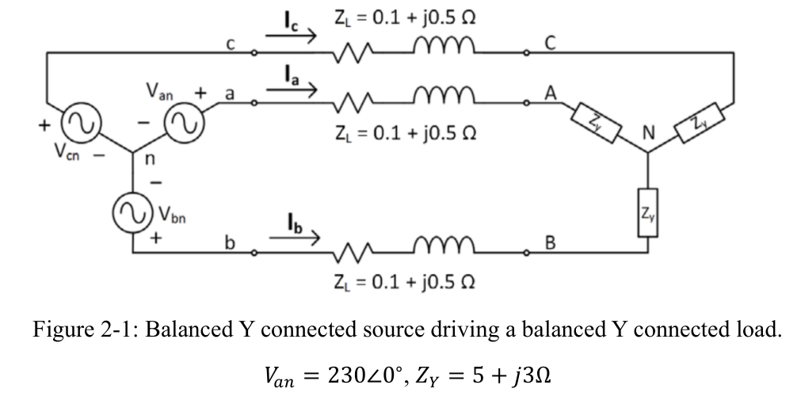
Figure 2-1: Y source (a, b, c, neutral n) → line impedances ZL → load terminals A, B, C → Y load with neutral N.
Find the line current phasors Ia, Ib, Ic.
Find the load line-to-line voltage phasors VAB, VBC, VCA.
Find and plot the instantaneous power delivered to the phase A load.
Find and plot the total instantaneous power delivered to the three-phase load.
Find the complex power of the three-phase load and the corresponding power factor.
The load is reconnected in Δ with ZΔ = 5 + j3 Ω per phase (Figure 2-2), with the same source and lines. Find the line current Ia, the load phase current IAB and the line-to-line voltage VAB.
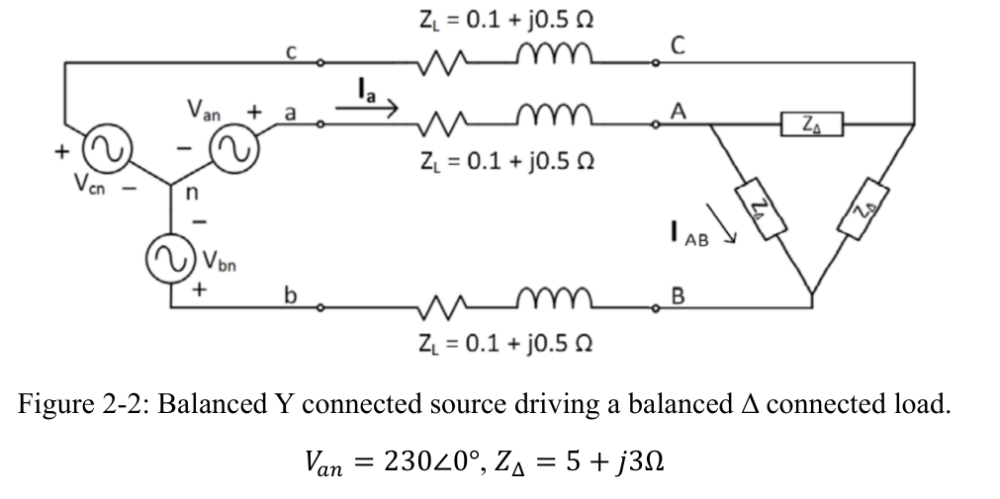
Figure 2-2: the same source and lines feeding a Δ load ZΔ between A, B, C; IAB flows from A to B.
Solution
(a1) Apparent power and power factor:
(a2) The bank must cancel all of the load's reactive power:
(a3) In Δ, each capacitor sees the line voltage 400 V and supplies one third:
(b1) Per-phase (a-phase) circuit: Van drives ZL + ZY.
Ib = 37.18∠−154.46° A, Ic = 37.18∠85.54° A.
(b2) Load phase voltage, then line voltage (abc: VAB leads VAN by 30° and is √3 larger):
VBC = 375.54∠−93.50° V, VCA = 375.54∠146.50° V.
(b3) Phase A power with θ = −3.50° − (−34.46°) = 30.96°:
Plot: a cosine at twice the line frequency (period 10 ms) around the average 6.913 kW, swinging between pmax = 6913 + 8062 = 14.98 kW and pmin = 6913 − 8062 = −1.15 kW. The short negative part is the inductive energy flowing back.
(b4) The three double-frequency terms are 120° apart and cancel, so the total is constant:
(b5)
(b6) Convert the Δ load to its Y equivalent, ZΔ/3 = 1.667 + j1 Ω:
For abc sequence the Δ phase current leads the line current by 30° and is √3 smaller:
The printed key uses VAN = 216.04 V in (b2)–(b5). The correct value is 216.82 V, which is why its 375.54 V, 6.913 kW, 20.74 kW and 24.19 kVA differ slightly from the key's 374.19 V, 6.889 kW, 20.67 kW and 24.10 kVA.
A3 · MT1 Fall 2023, Q1 35 pts
A Δ-connected three-phase motor with a rated power of 40 kW and a power factor of 0.8 (lagging) is connected to the power grid through a 5 km cable with an inductance of 0.51 mH/km. The voltage at the motor terminals is kept at 400 V (50 Hz).
(a) Calculate the magnitudes of the motor phase-to-neutral voltage and the rated phase current.
(b) A compensation capacitor bank is installed at the grid side of the line. Calculate the capacitance of the Y-connected capacitors and their nominal voltage required to increase the power factor at the grid side to unity while the motor works at rated power.
(c) Calculate the magnitudes of the currents drawn from the grid before and after the compensation.
(d) Calculate the power factor at the grid side when the motor works at half of its rated power, assuming the motor's power factor is constant and the compensation capacitors are still connected to the grid terminals.
Solution
(a) Work per phase on the equivalent Y.
The rated phase (winding) current of the Δ motor is 41.67 A; the line current is 72.17 A.
(b) Cable reactance per phase:
Per phase, the motor takes S = (40 + j30)/3 = 13.33 + j10 kVA. With Vmotor = 230.94∠0° V the line current is I = 72.17∠−36.87° A.
Grid-side phase voltage:
Reactive power the capacitors must supply per phase = cable vars + motor vars:
Each Y capacitor sees the grid phase voltage: nominal voltage ≈ 270 V (467 V line-to-line). Total bank = 42.52 kVAR.
(c) Before compensation the grid supplies the motor line current, I = 72.17 A. After compensation the grid supplies only 40 kW at unity power factor:
(d) Motor at half power, its terminal voltage still 400 V: S = (20 + j15)/3 = 6.667 + j5 kVA per phase and I' = 36.08∠−36.87° A.
The capacitor's vars fall with the square of the new voltage:
The printed key adds the full 30 kVAR of the motor to a single phase in (b), so it gets C = 1.5 mF and pf = 0.275 leading in (d). Per phase the motor needs 10 kVAR, which gives the values above.
A4 · MT1 Fall 2022, Q1 30 pts
Two three-phase parallel loads are connected to a 50 Hz three-phase generator through a 10 km line with 0.3 Ω/km resistance and 9.6 mH/km inductance (figure). The first load is Δ-connected, purely inductive and consumes 180 kVA. The second load consumes 270 kVAR at 0.8 power factor (lagging); its connection type is unknown. The system voltage at the loads' side is 10.4 kV. Calculate:
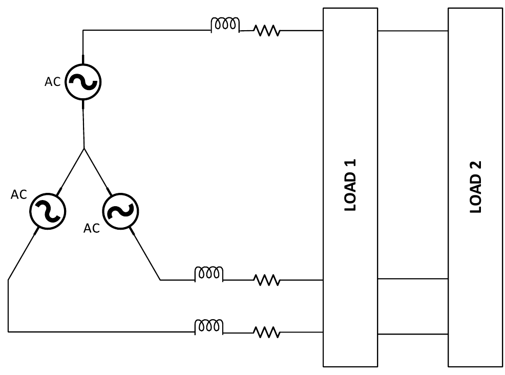
Figure: generator → 10 km three-phase line → load bus feeding Load 1 (Δ, purely inductive) and Load 2 in parallel.
(a) The voltage across each inductor in the first load and the current amplitude flowing through each of them.
(b) The total power consumed by the loads and the power factor.
(c) Draw the per-phase equivalent circuit of the system. Only calculate the line impedance.
(d) The amplitude of the phase-to-phase and phase-to-neutral voltage of the generator.
(e) The total active power lost in the transmission line.
(f) The required capacitances and their connection (Y or Δ) to improve the power factor of the loads to unity, given that the highest available capacitor voltage rating is 9 kV.
Solution
(a) In Δ each inductor sits between two lines, so it sees the line voltage, 10.4 kV. Purely inductive 180 kVA means j180 kVA, i.e. 60 kVAR per inductor:
(b) Load 2: sin θ = 0.6, so |S2| = 270/0.6 = 450 kVA and P2 = 0.8 · 450 = 360 kW.
Total consumed: 360 kW (450 kVAR).
(c) Per-phase circuit: generator phase voltage → Zline → load bus at 10.4/√3 kV, with Load 1 and Load 2 (as Y equivalents) in parallel to neutral.
(d) Reference Vph = 10400/√3 = 6004.4∠0° V.
Generator: phase-to-neutral 6.84 kV, phase-to-phase √3 · 6.84 = 11.84 kV (RMS).
(e)
(f) Unity pf: the capacitors must supply all 450 kVAR, i.e. 150 kVAR per phase. In Δ each capacitor would see 10.4 kV > 9 kV, so it is not allowed. In Y each sees 10.4/√3 = 6.0 kV < 9 kV, so use Y.
Part B · Magnetic circuits
Chapter II. Reluctance circuits, B-H curves, inductance, losses. Try each question first, then open its solution.
B1 · Chapter 2 problems, Example 1 this term
A magnetic core has a 0.2 mm air gap and three coils A, B and C. The core cross-sectional area is 20 cm² and the mean magnetic path length is 50 cm. Determine the number of turns NC of coil C needed to create a magnetic flux of 3.5 mWb.
Assume μ0 = 10⁻⁶ H/m. Neglect leakage and fringing, and take the core and the gap to have the same cross-sectional area.
Data from the figure (winding senses and the magnetization curve):
Coil A: NA = 250 turns, IA = 2 A.
Coil B: NB = 100 turns, IB = 1.25 A; its MMF opposes coil A.
Coil C: IC = 1 A; its MMF aids coil A.
Magnetization curve, on the segment that contains 1.75 T: B = 1.4 + H (B in T, H in kA/m).
Solution
1. Flux density. Core and gap have the same area:
2. Core field intensity from the segment B = 1.4 + H:
3. Gap field intensity:
4. MMF law around the loop (B opposes A, C aids A):
5. Result:
The 0.2 mm gap needs 350 A·t, twice the 175 A·t needed by 50 cm of iron.
B2 · Chapter 2 problems, Examples 2–3 this term
A core with infinite permeability has three parallel air gaps of lengths 2g, g and g/2 between two common core sections. Each branch has cross-sectional area A. Coil N1 is wound on the 2g branch and coil N2 on the g branch; the g/2 branch has no coil. Neglect leakage and fringing.
Data from the figure: both coils have the same winding sense, and upward flux is positive in each gap, so λ1 = N1φ1 and λ2 = N2φ2. In the series connection, i1 = i2 = i and v = v1 + v2.
Given N1 = 400, N2 = 100, g = 0.1 mm, A = 10 cm², μ0 = 4π × 10⁻⁷ H/m. Find:
(a) The signed flux density in each gap and the flux linkage of each coil when only I1 flows.
(b) The same quantities when only I2 flows.
(c) The flux densities and flux linkages when both currents flow.
(d) The two self-inductances and the signed mutual inductance.
(e) The coils are connected in series and v(t) = 100 sin(ωt) V is applied; coil resistances are zero. Find the induced voltages v1(t) and v2(t).
(f) Show that the answer to (e) holds for any N1, N2 with N1/N2 = 4, whatever g and A are.
Solution
Setup. With r = g/(μ0A), the gap reluctances are R1 = 2r (2g), R2 = r (g), R3 = r/2 (g/2).
Flux continuity at the core node and the MMF law around the two windows:
(a) Only I1:
B1 = 2.1542 I1 T, B2 = −0.71808 I1 T, B3 = −1.4362 I1 T; λ1 = 0.86169 I1, λ2 = −0.071808 I1 Wb-t.
(b) Only I2:
B1 = −0.17952 I2 T, B2 = 0.8976 I2 T, B3 = −0.71808 I2 T; λ1 = −0.071808 I2, λ2 = 0.08976 I2 Wb-t.
(c) Superposition:
(d) From λ1 = L11 I1 + M I2 and λ2 = M I1 + L22 I2:
M is the same both ways (reciprocity). It is negative because the flux each coil drives through the other coil's gap points against that coil's positive linkage direction.
(e) Series: I1 = I2 = i.
(f) With I1 = I2 = i and N1 = 4N2 the general fluxes become
r and N2 cancel, so v1 = 97.78 sin ωt V and v2 = 2.22 sin ωt V for any g and A.
The typed text of the posted v2 PDF prints φ, λ and the inductances 10 times too small (for example L11 = 86.169 mH); the flux densities and the voltages are right.
B3 · MT1 Fall 2024, Q3 35 pts
Two E-cores are combined and a coil is wound around a plastic former placed on the middle legs (Figure 3-1). Ferrite core (N92) properties and dimensions:
Cross-section of the outer legs A1 = 100 mm²
Cross-section of the middle leg A2 = 200 mm²
Mean core length Lmean = 53 mm (one E-core)
Gap length in a single core g = 0.5 mm (assembled middle-leg gap 2g = 1 mm)
Relative permeability μr = 1500 in the linear region, B < 0.3 T
μ0 = 4π × 10⁻⁷ H/m, number of turns N = 20
Assume the flux is homogeneously distributed in the core; ignore fringing and leakage.
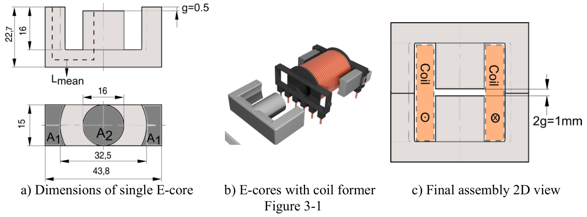
Figure 3-1: a) dimensions of a single E-core, b) E-cores with the coil former, c) final assembly 2D view.
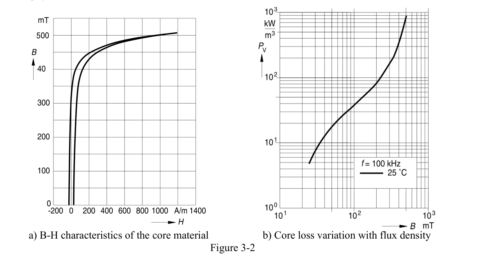
Figure 3-2: a) B-H characteristic of the core material, b) core loss density vs flux density (100 kHz, 25 °C).
(a) Draw the magnetic equivalent circuit and show the main flux paths. No numerical values are needed, but show all parameters.
(b) Calculate the equivalent reluctance of the system while the core operates in the linear region. Also calculate the inductance.
(c) What coil current gives a flux density of 0.25 T in the core? What are the magnetic field strengths in the core (Hcore) and in the air gap (Hgap) at this operating point?
(d) Find the current required to double the flux density in the core (from 0.25 T to 0.5 T). What is the inductance at this operating point? Comment on the effects of this inductance variation in practical applications.
(e) Compare the core losses and copper losses for the operating points of (c) and (d), using the numerical values provided:
Taking the core loss in (c) as 100%, how much is the core loss in (d)?
Taking the copper loss in (c) as 100%, how much is the copper loss in (d)?
Comment on the effects of these variations in practical applications.
Solution
(a) The coil MMF NI sits on the middle leg in series with the gap reluctance Rgap (2g = 1 mm, area A2). The flux φ then splits equally into the two outer loops, φ/2 each. Each loop runs through about 2·Lmean of ferrite with area A1, reluctance Rcore; the two loops are in parallel.
Because A2 = 2A1 and the middle leg carries φ while each outer leg carries φ/2, B is the same everywhere in the core.
(b)
(c) 0.25 T < 0.3 T, so the core is linear.
Check with the MMF law: 2(0.053)(132.6) + (10⁻³)(198 900) = 14.1 + 198.9 = 213 A·t = 20 · 10.65 A.
(d) 0.5 T is outside the linear region, so read the B-H curve: Hcore ≈ 1000 A/m at 500 mT. The gap stays linear: Hgap = 0.5/μ0 = 397.9 kA/m.
The flux doubled but the current rose 2.37 times, so L dropped about 15% (93.9 → 79.4 μH). In practice a saturating inductor changes a filter's cut-off frequency, raises ripple current in a converter, and can let the current run away as L keeps falling.
(e1) From the core-loss curve: about 100 kW/m³ at 0.25 T and about 800 kW/m³ at 0.5 T. Core loss in (d) ≈ 800% of (c): 8 times larger for twice the flux density.
(e2) Copper loss is I²R:
(e3) Doubling B costs 8 times the core loss and 5.6 times the copper loss, which lowers efficiency and overheats the part. If more flux or current is needed, use a bigger core (or a thicker conductor) instead of pushing this core into saturation.
B4 · MT1 Fall 2023, Q2 35 pts
The rectangular electromagnetic system in the figure has two coils and four air gaps in total. The characteristic of the ferromagnetic core material is given next to the drawing (a vertical line on the B-H plane). Dimensions:
Vertical air gaps' thickness: y
Width of the magnetic cores: w
Axial length of the magnetic cores: lz
Horizontal air gaps' thickness: x (can be varied)
Ignore flux outside the magnetic cores except in the air gaps, ignore coil resistance, and assume the core material is not electrically conductive.
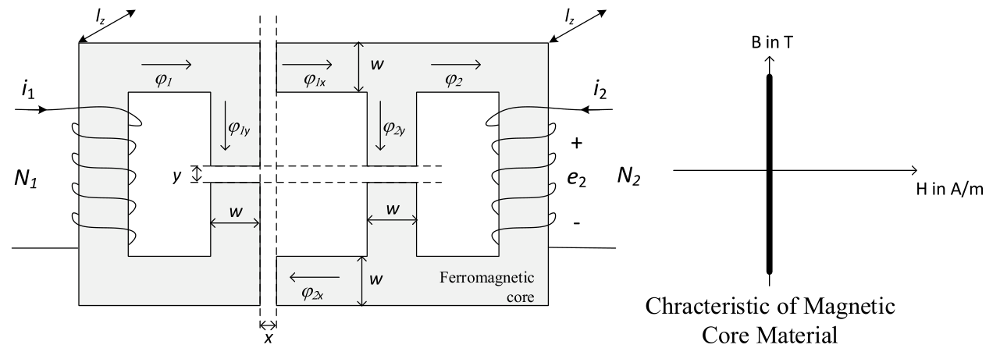
Figure: two C-shaped cores side by side, separated by the gap x at the top and bottom. Coil N1 (current i1) is on the left outer leg and coil N2 (current i2, voltage e2) on the right outer leg. Each inner leg has a gap y. Flux labels: φ1, φ1y, φ1x, φ2, φ2y, φ2x. Right: the core material's B-H characteristic.
(a) Draw the magnetic equivalent circuit and calculate the magnetic circuit parameters as functions of N1, N2, i1, i2, x, y, w, lz.
(b) Calculate the self-inductances (L11, L22) and mutual inductances (L12, L21) of coil 1 and coil 2 in terms of reluctances and turn numbers.
(c) Coil 2 is open-circuited. Write the induced voltage e2 of coil 2 in terms of the given parameters. Discuss two ways of creating a non-zero induced voltage e2.
(d) Fill in the electric equivalent circuit of the system, built around an N1:N2 ideal transformer (series R and X on each side, a shunt R ∥ X magnetizing branch on the primary side):
Identify the components that are zero (shorted) or infinite (open).
Identify the flux components (φ1, φ1y, φ2, φ2y, φ1x, φ2x) associated with each circuit component.
Put the transformer dots and show the i2 direction for the coils as defined.
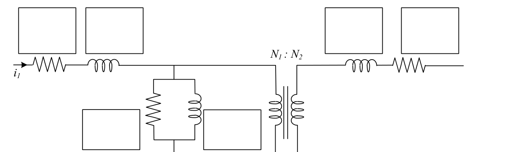
Figure: the equivalent-circuit template for (d).
Solution
(a) The B-H characteristic is a vertical line: μ → ∞, so the iron has zero reluctance and only the gaps count. Every gap has the cross-section w · lz:
Circuit: on the left, the source N1 i1 (left outer leg) has Ry (left inner leg, carries φ1y) directly across it. On the right, the source N2 i2 (right outer leg) has Ry (right inner leg, carries φ2y) across it. The two sides are joined by Rx at the top and Rx at the bottom, which carry the flux crossing between the cores (φ1x, φ2x). The two MMFs act in the same direction around the outer loop.
(b) With i2 = 0, the right outer leg is plain iron with zero MMF, so it shorts the right Ry. Coil 1 then sees Ry in parallel with the two Rx in series:
Only the flux through 2Rx links coil 2:
Split view: L11 = N1²/Ry + N1²/(2Rx) = leakage + magnetizing inductance.
(c)
Two ways to get e2 ≠ 0:
- Drive coil 1 with a time-varying (AC) current i1 at fixed x: transformer action.
- Keep i1 constant (DC) and vary the gap x in time (move the cores): the reluctance, and so the mutual flux, changes.
e2 = L12 di1/dt is valid only when x is constant.
(d)
| Component | Value | Flux it represents |
|---|---|---|
| R1, R2 (winding resistances) | 0, shorted | none (coil resistance ignored) |
| Xl1 (primary leakage) | N1²/Ry, finite | φ1y (links coil 1 only) |
| Xl2 (secondary leakage) | N2²/Ry, finite | φ2y (links coil 2 only) |
| Rc (core-loss resistance) | ∞, open | none: non-conductive core, no hysteresis, so no core loss |
| Xm (magnetizing) | N1²/(2Rx) referred to primary, finite | φ1x, φ2x (mutual flux crossing the x gaps) |
Dots: on the terminals where the currents i1 and i2 drive aiding flux in the outer loop (top of each winding). Draw i2 entering the dotted terminal of the secondary, as the coil current is defined in the figure.
B5 · MT1 Fall 2021, Q2 25 pts
A 140 W USB-C laptop charger uses GaN transistors for high switching speed and contains several inductors. Assume leakage flux is ignored and all magnetic flux is homogeneously distributed within the core.
Part I. A 25-turn winding is wrapped around a toroidal core:
Core material: nanocrystalline, relative permeability μr = 25000
μ0 = 4π × 10⁻⁷ H/m, saturation flux density Bsat = 1.2 T
Inner diameter 12 mm, outer diameter 24 mm, height 6 mm
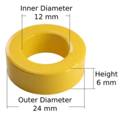
Figure: the toroidal core with its inner diameter, outer diameter and height.
(a) Calculate the inductance of this toroidal inductor.
(b) Calculate the maximum current this inductor can carry without saturating the core.
Part II. High switching speeds create high dv/dt waveforms, which drive common-mode noise currents through parasitic stray capacitances. Common-mode currents flow in the same direction in the positive and negative conductors. The charger has a common-mode filter: two separate windings on one toroid, with self-inductances L1 = L2 = 12.5 mH.
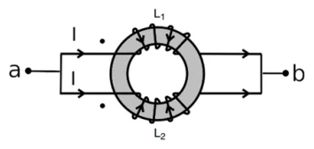
Figure (c): both windings carry current I in the same direction from a to b (common mode).
(c) Calculate the equivalent inductance of the filter (from a to b) when both windings carry current in the same direction (common-mode current). Also calculate the equivalent impedance at 400 kHz.
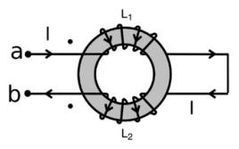
Figure (d): current I goes in through one winding and returns through the other (differential mode).
(d) Calculate the equivalent inductance and impedance at 400 kHz for the differential-mode current. Comment on the results and explain the function of this device.
Solution
(a) Mean path and cross-section of the toroid:
(b) Saturation flux Φsat = Bsat Ac:
A high-μ core without a gap saturates at a very small current.
(c) Common mode: each winding carries I in the same sense (total 2I from a to b), so the MMFs add.
(d) Differential mode: the same current goes out through one winding and returns through the other, so the two MMFs cancel.
The choke is a mode-selective filter. It shows a high impedance (31.4 kΩ at 400 kHz, rising with frequency) to common-mode noise, but no impedance to the differential power current, so it removes noise without affecting power delivery. Since the load-current MMFs cancel, the core does not saturate under load.
Part C · Single-phase transformers
Chapter III, first half. Single-phase transformers only. Try each question first, then open its solution.
C1 · MT1 Fall 2023, Q3 35 pts
The METU campus has about 40 distribution transformers that reduce the 34.5 kV medium voltage (MV) to 230 V low voltage (LV). They are three-phase, but a single-phase transformer model with the specs below is used for this question.
| Parameter | Value |
|---|---|
| Turns ratio N1 : N2 | 150 : 1 |
| R1, R2 | 18 Ω, 0.0008 Ω |
| jX1, jX2 | j36 Ω, j0.0016 Ω |
| Rc, jXm (primary side) | 245 kΩ, j70 kΩ |
(a) Draw the equivalent circuit with all components referred to the primary side. You may move the parallel branch to the primary terminals.
(b) The secondary terminal voltage is 230 V and the secondary supplies 1500 A at 37° lagging (cos 37° ≅ 0.8). Calculate the primary terminal voltage (magnitude and phase).
(c) Draw the phasor diagram with the referred secondary voltage V2′, the referred current I2′ and the primary voltage V1. Plot the waveforms against time, labelling the time axis, the peak values and the phase differences.
(d) Calculate the core loss, the copper loss and the efficiency at this operating point.
(e) The transformer now delivers the same real power at unity power factor, with the secondary voltage still 230 V. Does the efficiency change? Explain (no numbers required).
(f) How would Rc and Xm change if the same transformer were connected to a 60 Hz grid with the same terminal voltage? Explain in detail.
Solution
(a) Refer the secondary to the primary with a² = 150² = 22500 and move the shunt branch (Rc ∥ jXm) to the primary terminals. The series branch becomes one equivalent impedance:
Circuit: V1 → [Rc = 245 kΩ ∥ jXm = j70 kΩ across V1] → 36 + j72 Ω in series → V2′ = aV2.
(b) Referred quantities, with V2′ as reference:
(c) Phasors: V2′ along the reference axis; I2′ at −37°; then I2′Req parallel to I2′ and I2′jXeq perpendicular to it (90° ahead) added at the tip of V2′; V1 closes the triangle at +0.58°.
Waveforms (50 Hz, period 20 ms):
- v2′(t): peak √2 · 34.5 = 48.79 kV, reference.
- v1(t): peak √2 · 35.22 = 49.81 kV, leads v2′ by 0.58° ≈ 0.03 ms.
- i2′(t): peak 10√2 = 14.14 A, lags v2′ by 37° ≈ 2.06 ms.
(d)
(e) Yes, it rises. At unity power factor the same 276 kW needs only I2 = 276000/230 = 1200 A instead of 1500 A, so the copper loss falls with I² (to 64% of before). The series voltage drop is also smaller, so V1 and the core loss fall slightly. Pout is the same and the losses are lower, so η increases (to about 97.4%).
(f) Xm = ωLm. Lm depends on the core geometry and material, so it stays about the same and Xm rises with frequency: Xm ≈ 1.2 · 70 = 84 kΩ.
Rc models the core loss. At constant V, V = 4.44 f N Φmax, so the peak flux density falls to 50/60 of its old value:
- Eddy-current loss ∝ f²B² = (fB)² stays the same.
- Hysteresis loss ∝ f·B^n with n ≈ 1.6–2 falls, because B drops faster than f rises in this product.
So the core loss falls slightly and Rc = V²/Pcore rises slightly. The printed key says the losses rise and Rc falls. That holds only if B stayed the same, which a fixed terminal voltage does not allow.
C2 · MT2 Fall 2024, Q1 30 pts
The figures show a 20 kVA, 2000/200 V, 50 Hz single-phase transformer and its equivalent model. The core cross-section is 100 cm² and the core is designed to operate up to the saturation flux density of 1.6 T on the B-H curve given. The model has Rc = 12.5 kΩ and Xm = 2 kΩ across the HV terminals, and req, xeq in series on the LV side of the ideal transformer.
An available 50 Hz test source can provide up to 200 V and 10 A. Calculate:
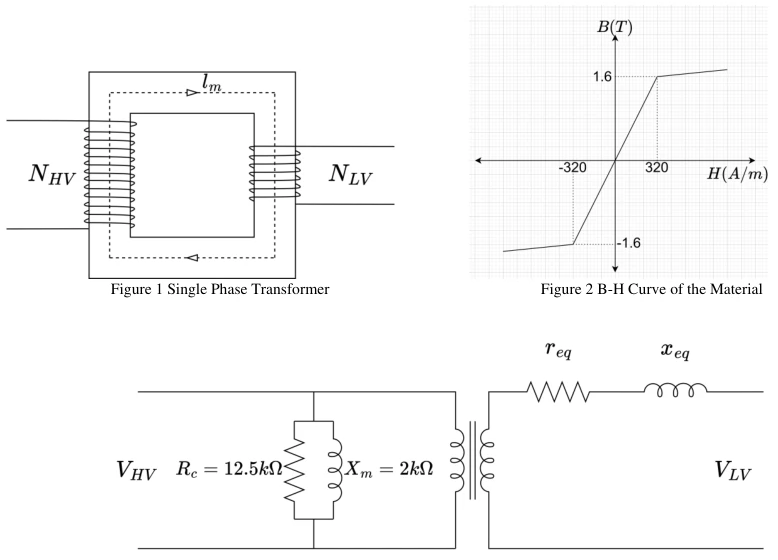
Figure 1: single-phase transformer, NHV and NLV on a core with mean length lm. Figure 2: B-H curve, linear up to 1.6 T at 320 A/m, then nearly flat. Below: equivalent model with Rc = 12.5 kΩ ∥ Xm = 2 kΩ on the HV side and req + jxeq on the LV side.
(a) The voltage, current and active power required to perform the nominal open-circuit test from the proper side.
(b) req and xeq in the figure, if 5.6% of the nominal voltage and 500 W are required to perform the nominal short-circuit test from the proper side.
(c) The maximum possible efficiency in percent, and the load (active power and power factor) at which it is achieved.
(d) The number of turns on the HV and LV sides (NHV and NLV).
(e) The average length of the core (lm in the figure). If you could not find the number of turns in (d), assume NLV = 100.
Solution
Rated currents: IHV = 20000/2000 = 10 A, ILV = 20000/200 = 100 A. Turns ratio a = 10.
(a) The OC test needs rated voltage. The source gives at most 200 V, so it must be done from the LV side at 200 V (the HV side would need 2000 V). Refer the shunt branch to the LV side (divide by a² = 100):
OC test: 200 V, 10.13 A, 320 W (the current is just above the 10 A source limit).
(b) The SC test needs rated current: 10 A on the HV side is within the source limit (100 A on the LV side is not), and 5.6% of 2000 V = 112 V < 200 V. So do it from the HV side:
In the figure req and xeq are on the LV side, so divide by a² = 100:
(c) Maximum efficiency occurs when copper loss = core loss. Core loss at rated voltage = 320 W; full-load copper loss = 500 W.
The highest value comes at unity power factor (largest output for the same losses):
(d) At rated voltage the core reaches Bmax = 1.6 T:
(e) Xm gives the magnetizing inductance, and the B-H slope gives μ:
Check: at 2000 V the magnetizing current is 1 A RMS (1.414 A peak), and NHV · 1.414 = 796 A·t = 320 A/m · 2.49 m. (With the fallback NLV = 100, so NHV = 1000: lm = 7.85 m.)
C3 · MT1 Fall 2022, Q3 40 pts
This question has two independent parts.
Part 1 · Equivalent circuit model (15 pts). Answer for the given equivalent circuit of a single-phase transformer (R1, X1, shunt Rc ∥ Xm, ideal N1:N2 transformer with e1, e2, then X2, R2; terminal quantities v1, i1, v2, i2).
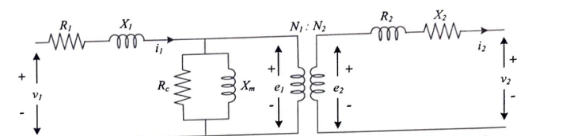
Figure: the exact equivalent circuit of the single-phase transformer.
(a) For N1 ≫ N2, compare the magnitudes of X1 and X2. Briefly explain your reasoning.
(b) Under which conditions is v1/v2 = N1/N2? Explain with the physical meaning of the equivalent circuit parameters (for example, do not only say "if we ignore Rc").
(c) Two materials have the B-H loops shown at 1.5 T peak flux density, marked 1 and 2 (both reach 1.5 T at 300 A/m; loop 2 is wider). If material 2 is used instead of material 1, which component of the equivalent circuit is affected and how? Explain.
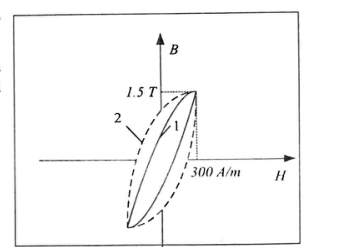
Figure: B-H loops of materials 1 and 2 at 1.5 T peak.
Part 2 · Calculations (25 pts). A 1000 VA, 115:230 V, 50 Hz single-phase transformer is inspected in a laboratory. The winding resistances measured at 50 Hz are R1 = 0.25 Ω and R2 = 1 Ω. The voltages and currents below are measured at the primary and secondary terminals with an available load; the primary voltage is adjusted until rated voltage is obtained at the secondary terminals.
v1(t) = 171.25 cos(2π50t + 10.66°) V
i1(t) = 11.7 cos(2π50t − 0.5°) A
v2(t) = 325.30 cos(2π50t) V
i2(t) = 5.66 cos(2π50t) A
You can assume an approximate equivalent circuit with the parallel branch carried to the primary terminals.
(a) Calculate the transformer's efficiency in percent.
(b) Calculate the copper and core losses.
(c) Calculate Rc in the equivalent circuit.
(d) Calculate Xeq = X1 + X2′ in the equivalent circuit. A phasor diagram can help.
(e) Keeping the secondary voltage and current the same, calculate the new efficiency for Xeq = 0. How and why does Xeq affect the efficiency?
(f) Is the core saturated at this operating condition? Comment based on the given voltage and current waveforms.
Solution
Part 1 (a) X1 ≫ X2. A leakage inductance is N²/Rleak for a leakage path of similar geometry, so
Referred to the same side they are comparable.
Part 1 (b) The ideal transformer gives e1/e2 = N1/N2. The terminal ratio equals it only if there is no series voltage drop:
- R1 = R2 = 0: no winding resistance, so no ohmic drop (and no copper loss).
- X1 = X2 = 0: no leakage flux, so all flux links both windings.
Rc and Xm are across e1, so they do not change the ratio by themselves. They matter only through the exciting current's drop on R1 and X1, which is zero once R1 = X1 = 0.
Part 1 (c) Rc is affected. Loop 2 has a larger area, so the hysteresis energy per cycle (and the core loss) increases. Since Pcore = E²/Rc at the same voltage, Rc decreases. Xm stays about the same because both materials reach 1.5 T at the same 300 A/m peak field, so the magnetizing current is about the same.
Part 2. RMS phasors (divide peaks by √2):
(a) The primary and secondary power factors differ, so use each side's own angle:
(b) a = 115/230 = 0.5. With the shunt branch at the primary terminals, the series branch carries I2′:
(c)
(d) Referred to the primary, V2′ = aV2 = 115∠0° V and I2′ = 8.0∠0° A are in phase. V1 = V2′ + I2′(Req + jXeq), so the jXeq I2′ drop is the whole vertical part of V1:
Check: (V1 − V2′)/I2′ = 0.499 + j2.80 Ω; the 0.499 Ω real part matches Req = 0.5 Ω.
(e) With Xeq = 0 the primary voltage only needs to cover the resistive drop:
Xeq absorbs no active power, so Pout and Pcu are unchanged. It only raises the primary voltage needed, and with it the core loss V1²/Rc. Removing it lowers the core loss slightly and raises η slightly (93.7% → 93.8%). Its main effect is on voltage regulation, not efficiency.
(f) No. All four waveforms are pure 50 Hz sinusoids. A saturated core would draw a peaky, non-sinusoidal (harmonic-rich) exciting current, which would show up in i1.
C4 · MT2 Fall 2023, Q1 40 pts
This question has three independent parts.
Part I (10 pts). State whether each statement is true or false and give an explanation.
The electrical resistance of a coil (conductor) does not depend on the frequency.
Laminated steel (electrical steel) is used to decrease hysteresis losses.
Transformer cores are usually built with intentionally added air gaps.
If a 50 Hz AC voltage is supplied to an electromagnetic device, a pure 50 Hz AC current is always observed.
Copper is a ferromagnetic material.
Part II (12 pts). For the single-phase transformer circuit (V1 → Req → jXeq → V2′, current i1 = i2′) and the phasor diagram given, choose the correct option in each line.
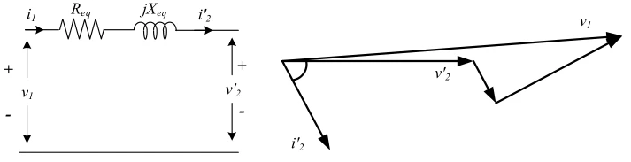
Figure: the series circuit Req, jXeq and its phasor diagram: V2′ horizontal, I2′ below it (lagging), V1 longer than V2′ and slightly above it.
Positive / negative active power is supplied to the load.
Positive / negative reactive power is supplied to the load.
The voltage regulation of the transformer is positive / negative.
The power factor at the primary terminal is lagging / leading.
The power factor at the secondary terminal is lagging / leading.
The only loss-related component in the circuit is due to resistive losses / core losses.
Part III (18 pts) · Transformer tests. A 10 kVA, 2500/250 V, 50 Hz single-phase transformer gave these test results:
| Open-circuit test | Short-circuit test | |
|---|---|---|
| Voltmeter | 250 V | 80 V |
| Ammeter | 0.5 A | 4 A |
| Wattmeter | 100 W | 80 W |
You can assume the approximate model with the parallel branch carried to the HV or LV terminals.
(a) Determine the side on which each test was performed and briefly explain why.
(b) Calculate the equivalent series impedance (Z = R + jX) referred to the LV side.
(c) Calculate the parallel branch impedance (Rc, Xm) referred to the LV side.
(d) Calculate the efficiency when the transformer supplies half of its rated power at rated voltage to a purely resistive load.
Solution
Part I
| # | T/F | Explanation |
|---|---|---|
| 1 | F | Skin effect pushes AC current to the conductor surface, so the AC resistance rises with frequency. |
| 2 | F | Laminations cut the eddy-current paths, so they reduce eddy-current loss. Hysteresis loss is reduced by the material (e.g. silicon steel, a narrow loop). |
| 3 | F | A gap adds reluctance, which raises the magnetizing current (lowers Xm). Transformer cores are built with as small gaps as possible. |
| 4 | F | If the core saturates, the magnetizing current is non-sinusoidal and contains higher harmonics. |
| 5 | F | Copper is a good conductor but μr ≈ 1 (slightly diamagnetic); it is not ferromagnetic. |
Part II. I2′ lags V2′ by less than 90°, so the load is resistive-inductive. |V1| > |V2′| because of the Req and jXeq drops.
- Positive active power (angle between V2′ and I2′ below 90°).
- Positive reactive power (the current lags).
- Positive regulation (|V1| > |V2′|, so the no-load voltage is higher than the loaded one).
- Lagging at the primary (V1 leads I2′ by even more than V2′ does).
- Lagging at the secondary.
- Resistive losses: Req is the only lossy element; the circuit has no shunt (core) branch.
Part III (a) Rated currents: IHV = 10000/2500 = 4 A, ILV = 10000/250 = 40 A.
- OC test: LV side. It was done at 250 V, the rated LV voltage (OC tests need rated voltage, normally from the low-voltage side).
- SC test: HV side. It was done at 4 A, the rated HV current (SC tests need rated current, normally from the low-current HV side).
(b) From the SC test (HV side), then refer to LV with a = 10:
(c) From the OC test (already on the LV side, no referring needed):
(d) Half rated power to a resistive load at 250 V: I2 = 5000/250 = 20 A, in phase with V2. Shunt branch at the input terminals, LV side: